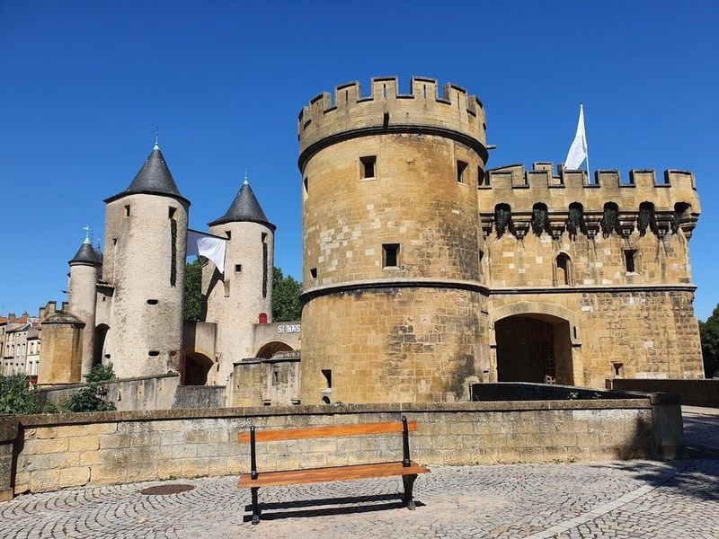
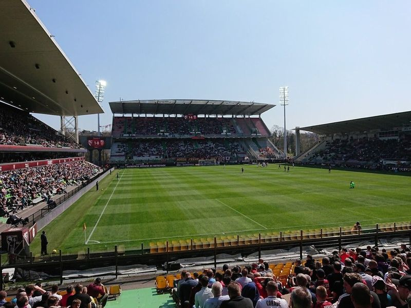
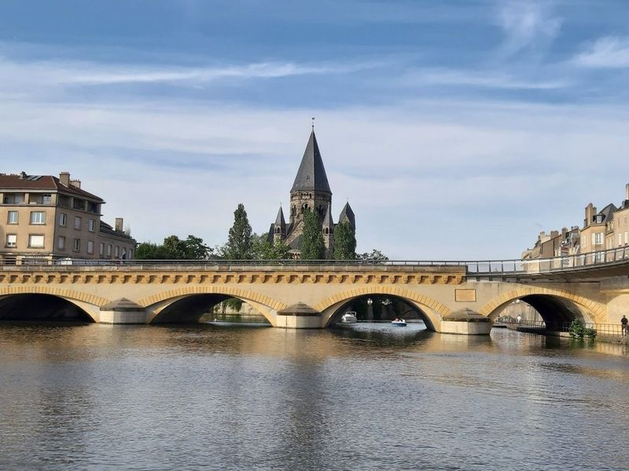
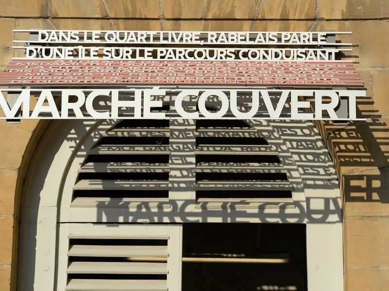
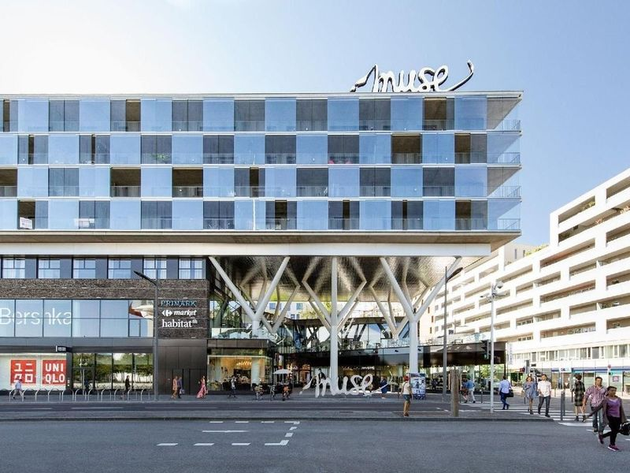
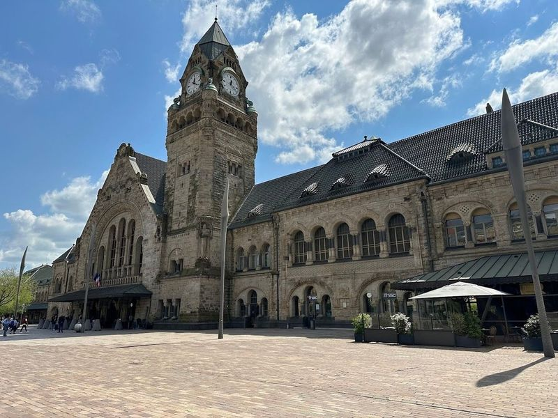
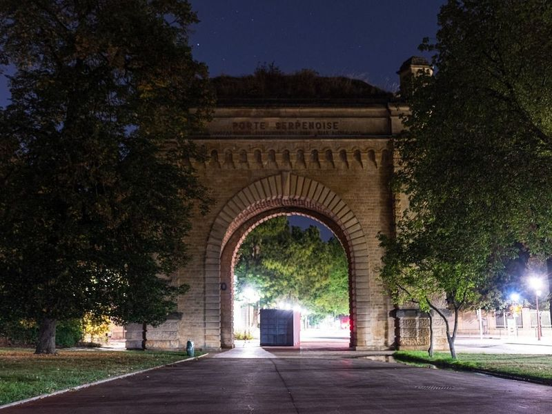
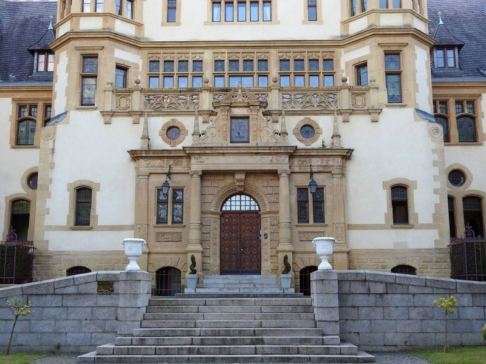
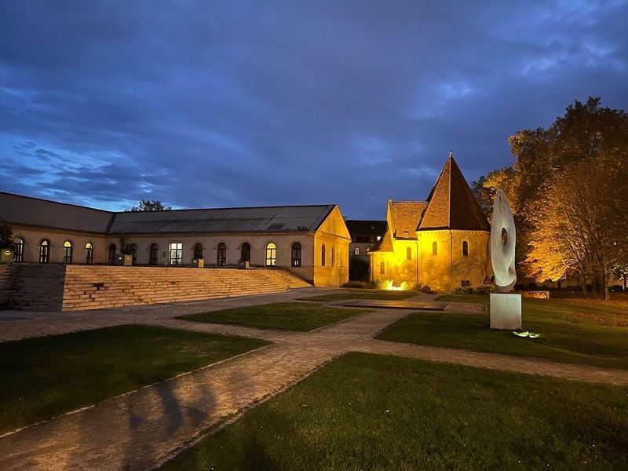
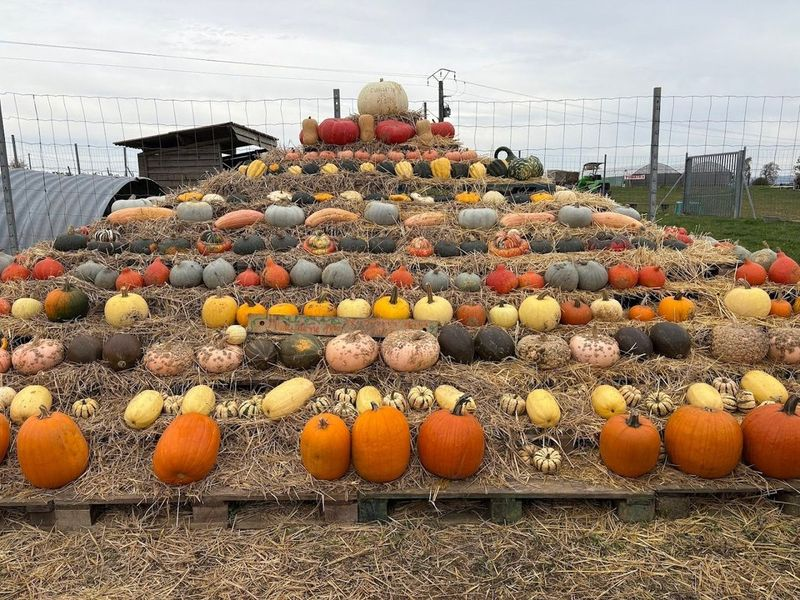

Explore Metz
A Brief History
Metz stands where Roman Divodurum guarded the Moselle crossing and later bishops and German emperors contested a strategic city on the eastern march of France. Its cathedral of Saint-Étienne combines one of Europe's largest expanses of stained glass with Gothic stonework funded by medieval canons. Annexed by Germany from 1871 to 1918, Metz returned to France with streetscapes that mix eighteenth-century French squares, Prussian barracks, and contemporary Pompidou-Metz cultural investment.
Attractions Map
Top Sights & Activities

Porte des Allemands
The medieval bridge castle and fortification, now converted into a walking path, stands majestically overlooking the Seille River in Metz' Quartier Outre-Seille. The imposing edifice features two round towers and bastions, dating back to the 13th and 15th centuries.

Stade Saint-Symphorien
Stage Saint-Symphorien is a well-planned and modern stadium located in Metz, known for its solid atmosphere and historical significance as the home ground of the FC Metz. travellers can enjoy a sporty evening by cheering for the Metz Handball dragons at the Arenes de Metz or watching a football match featuring the FC Metz garnets. The stadium offers comfortable VIP lounges with excellent food, making it a perfect place to experience an exciting game night.

New Temple
The New Temple in Metz, Alsace and Lorraine is a Protestant place of worship housed in a neo-Romanesque building that was inaugurated in 1904. Inspired by the Rhine cathedrals of Speyer and Worms, this temple showcases a medieval look despite being constructed in the early twentieth century. The dark sandstone construction material contrasts with the local Jaumont limestone of the surrounding buildings.

Metz covered market
Metz covered market, also known as the Episcopal Palace, is a bustling hub of activity with stalls open from 8am-6pm Monday-Saturday. savor a bowl of vegetable or fruit soup at Soupe A Soups or indulge in local meats and cheeses at Chez Mauricette. For a change of pace, visit the market located right in front of the cathedral where explore various stalls and even find stores selling artisan coffee roasting equipment.

Muse
The Muse shopping mall is brand new, with a variety of upscale retailers and casual dining options. It's located close to the popular Centre Pompidou art museum, making it a popular destination for shoppers. While it does tend to be a bit crowded, the mall has a clean and modern look that's sure to impress.

Metz-Ville
Metz is a city with a rich history and architecture. The Metz station and the Imperial Quarter are remnants of the German era, showcasing impressive Neo-Roman style buildings that were part of William II's efforts to modernize the city. The 300-meter-long Gare de Metz, completed in 1908, is an architectural marvel with the Emperor's apartments and reception pavilion. It has been recognized as one of France's most train stations multiple times.

Serpentine Gate
The Serpentine Gate is a archway located in a park near the city center of Metz. The gate is associated with several historical events, including the southern limit of the Roman rampart during construction and the beginning of the 20th century when it was destroyed during World War I. The gate is beautifully designed and would be a nice walk if the weather is good.

Palais du Gouverneur Militaire
The imposing nineteenth century castle was the stronghold of the military governor of Metz during the German period. Today, it is a museum containing notable art from this era. The site is catalogued as a monument. The site is catalogued as a monument.

Arsenal
Originally built as a military arsenal in 1864, the Arsenal in Metz has been transformed into a cultural hub. Renovated by architect Ricardo Bofill, it now houses one of Europe's most concert halls with exceptional acoustics and decor. The complex includes three theaters, including the Grande Salle dedicated to music. It is home to the Lorraine National Orchestra and hosts prestigious temporary exhibitions.

Cueillette de Peltre
Cueillette de Peltre offers a delightful opportunity to stroll through lush greenery and savor the scents of various fresh fruits, vegetables, and flowers. It's a perfect place for those who want to experience hands-on field work and gain insight into agricultural practices. The farm provides a well-equipped garden and flower fields where travellers can access affordable, locally sourced produce.